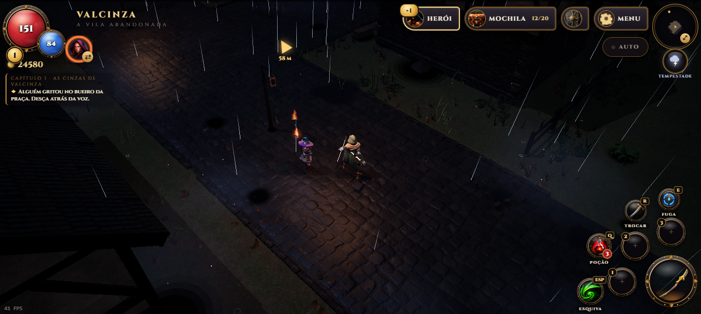
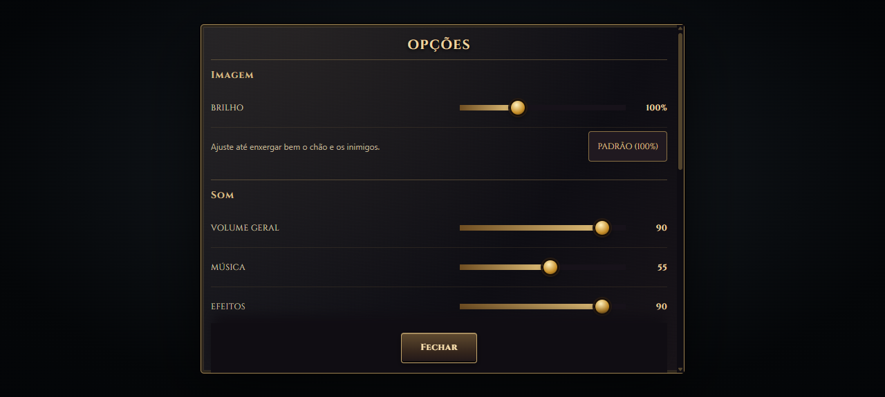
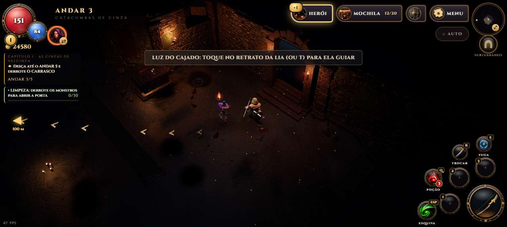

Uma rodada de acabamento: nenhum botão escondido atrás de outro, menus mais claros e uma chuva que parece chuva.
HUD sem sobreposições
O botão AUTO cobria o MENU em vários tamanhos de tela. Agora ele fica sempre abaixo do último botão. Em celulares grandes deitados, os botões ficam em linha ao lado do minimapa e não invadem mais as habilidades. Com o celular em pé, o nome do lugar não cobre o clima, e a seta do objetivo desvia dos painéis. O aviso para girar o celular aparece no topo e só em telas de toque.

MENU e AUTO visíveis lado a lado com o minimapa, sem tocar nas habilidades.
Menus mais claros
Os controles de brilho e volume preenchem até o valor escolhido, e o texto das opções não aparece mais por baixo de FECHAR. A árvore de habilidades perdeu a mancha escura atrás dos ícones e, deitada, cabe sem rolagem. Nas conversas, a recompensa fica sempre visível; no diário, a aba Missões não mostra mais "0" com uma missão listada.

Brilho e volumes com trilha que mostra o valor.
Chuva e trilha
Cada gota agora tem ponta clara e cauda que some, com brilho variado: a tempestade deixa de parecer riscos desenhados na tela. As setas que levam ao objetivo ficaram douradas e discretas, sem estourar no chão escuro das catacumbas.

Trilha da missão integrada à iluminação das catacumbas.
Capturas do jogo e da bancada de testes com os modelos reais. 30 testes automatizados e interface verificada em seis tamanhos de tela. Teste físico no aparelho pendente.